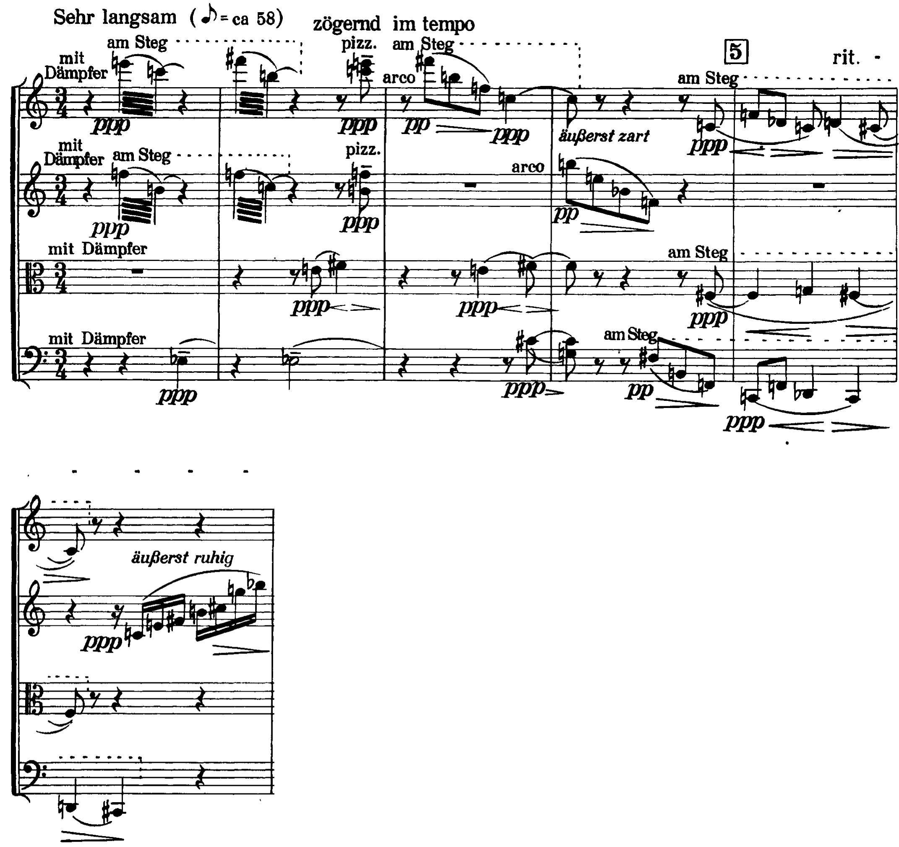
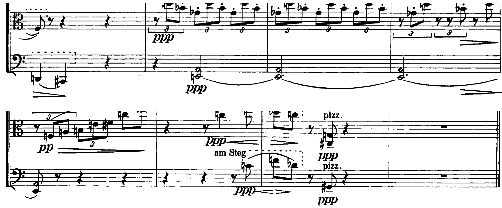
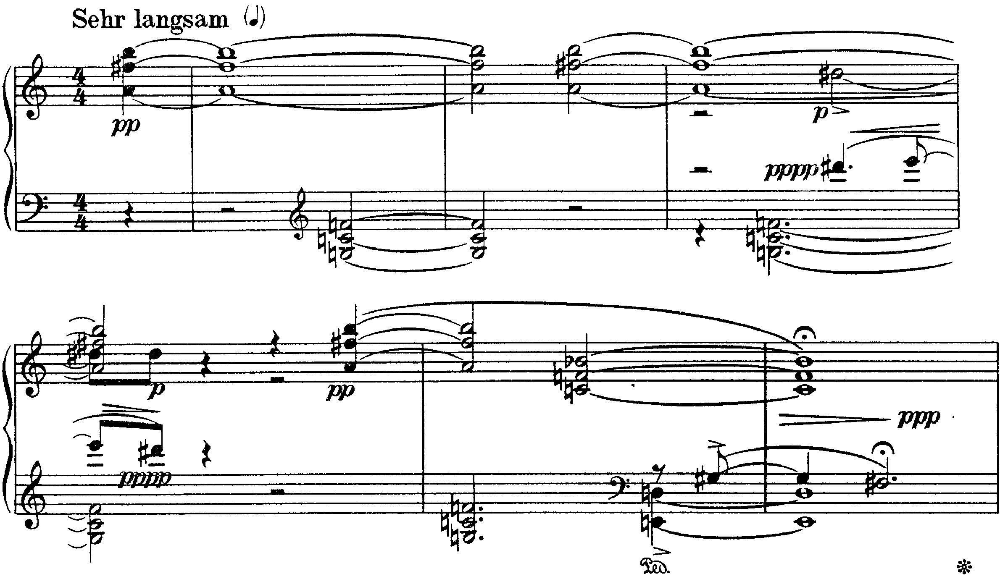
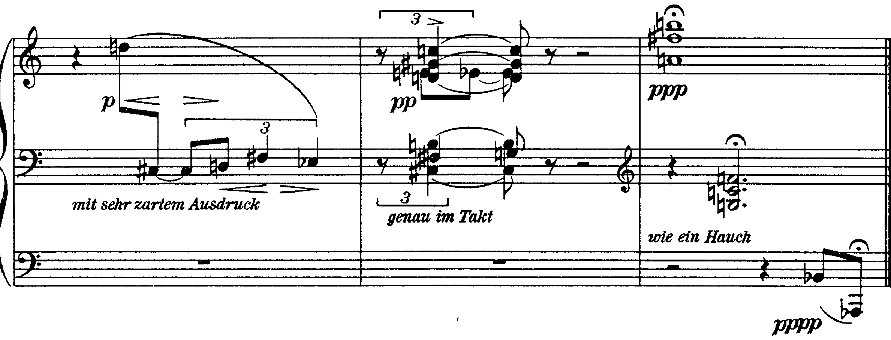

Il quarto dei Cinque movimenti per quartetto d’archi op. 5 (1909): tremoli al ponticello, pizzicati, armonici, e un solo tetracordo che apre e chiude il pezzo.
micro-cellule sonore che emergono dal silenzio — e in esso ritornano
C. Galli, Storia della musica 3, p. 336, sulla poetica di Webern
Lezione di due ore. Seconda ora: Analisi integrale scritta: Schönberg, op. 19 n. 6. I compiti per casa sono alla fine.
I Fünf Sätze op. 5 sono del 1909, l’anno dell’op. 11 di Schönberg (lezione 1). Per Surian la «tendenza ad una contrazione aforistica è più visibile in Webern», e i Fünf Sätze «sono di una concentrazione estrema» (Manuale di storia della musica, IV, p. 129); Salvetti osserva che l’op. 5 «aveva compresso in dimensioni piccolissime tutti i possibili contrasti», fino a impiegare ogni effetto dell’arco, «pizzicato, sordina, armonici, “col legno”, “al ponticello”» (La nascita del Novecento, pp. 194–195). Il quarto movimento dura tredici battute in 3/4, Sehr langsam (croma = 58 circa), tutti gli strumenti con sordina. La partitura prescrive per quasi ogni nota un modo d’attacco: am Steg (al ponticello), pizz., arco, armonici; le dinamiche non superano il pp e scendono spesso al ppp; il tempo oscilla di continuo (zögernd, rit., tempo, verklingend).
| Sezione | Battute | Materiale | Insiemi | Indicazioni |
|---|---|---|---|---|
| A | 1–6 | tremoli dei violini al ponticello; pizzicati; linee che scendono (violino I, violino II, violoncello); la viola sul semitono mi–fa♯–sol | 4-8, 4-9, 3-5; 6-5 alla b. 2 | Sehr langsam, ppp, zögernd, rit. |
| B | 7–10 | ostinato pizzicato della viola in terzine; linea del violino I; si3 del violino II e mi4 armonico del violoncello tenuti | 3-12 (viola); 4-17 (violino I) | tempo, so zart als möglich, verklingend |
| A′ | 10–13 | la viola sale con l’arco; armonici del violino I; ottave do–fa e re♭–do; un accordo pizzicato; la quintina del violino II | 7-19 (viola); 3-5; 4-9 alla b. 12; 5-18 | tempo, rit., flüchtig |
Descrivere un pezzo di Webern soltanto come «timbro e silenzio». Il timbro conta, ma le altezze sono scelte con la stessa cura: i suoni di ogni gesto si possono contare, e mostrano che il pezzo è costruito su pochissime classi.

Le prime due battute sono fatte di gesti brevissimi separati da pause: due tremoli simultanei dei violini al ponticello, ppp (b. 1: mi6–do6 e fa5–si4; b. 2: fa♯6–si5 e fa5–do5), un mi♭3 tenuto del violoncello con la sordina, un semitono della viola, mi4–fa♯4 con il crescendo e il diminuendo, e, su un ottavo in levare, zögernd, un accordo pizzicato dei due violini che ripete le note del primo tremolo. I quattro suoni della b. 1, do–mi–fa–si, sono la classe 4-8 [0, 1, 5, 6]; quelli della b. 2, do–fa–fa♯–si, sono la classe 4-9 [0, 1, 6, 7]: due tritoni a distanza di semitono (fa–si, do–fa♯), o due semitoni a distanza di tritono.
Dalla b. 3 i gesti diventano linee che scendono. Il violino I, arco, pp, suona fa♯6–si5–fa5–do5: gli stessi quattro suoni del tremolo della b. 2, ora in successione, ancora 4-9. Alla b. 4 il violino II risponde con si5–mi5–si♭4–fa4, un’altra forma di 4-9, e il violoncello, al ponticello, con fa♯3–si2–fa2, tre suoni della stessa classe (3-5). Alla b. 5 le linee si stringono in semitoni: il violino I scende nel registro grave (fa4–re♭4–do4–re4–do♯4), il violoncello scende a do2–fa2–re♭2–do2, la viola oscilla fa♯3–sol3–fa♯3. La b. 6 chiude la sezione: il violino II, äußerst ruhig, sale in semicrome dal do4 al si♭5, il violoncello scende re2–do♯2.
4-9 [0, 1, 6, 7]. Il tetracordo formato da due tritoni a distanza di semitono; vettore 200022 (due semitoni, due quarte, due tritoni). È simmetrico: trasportato di un tritono dà gli stessi suoni, e per questo ne esistono solo sei trasposizioni.
Saturazione dei sottoinsiemi. Forte usa proprio una figura di quattro suoni dell’op. 5 n. 4 per mostrare un insieme i cui sottoinsiemi di tre suoni appartengono tutti alla stessa classe: i quattro tricordi di 4-9 si riducono tutti a 3-5 [0, 1, 6] (The Structure of Atonal Music, pp. 27–28, es. 27).
Complesso di insiemi. Forte apre la sua teoria del complesso di insiemi con l’inizio dello stesso pezzo: l’insieme che suona alla fine del passo, 6-5, contiene ogni classe di altezze enunciata fino a quel punto (pp. 94–95, es. 98).
Nelle bb. 1–2 entrano sei classi di altezze: do, mi, fa, si (b. 1, violini), mi♭ (violoncello), fa♯ (viola e violino I). Nel momento del pizzicato, sul secondo ottavo del terzo movimento della b. 2, suonano insieme do6–mi6, fa5–si4, il fa♯4 della viola e il mi♭3 del violoncello: esattamente le sei classi sentite fino a lì, la classe 6-5. Il pezzo comincia dunque con un accumulo che si chiude su sé stesso; le battute seguenti estraggono da quel serbatoio il tetracordo 4-9, lo presentano in tre forme (bb. 2, 3, 4) e lo spezzano nei suoi tricordi. Il pezzo tornerà a 4-9 soltanto alla b. 12, nel pizzicato di tre strumenti: re4, do♯3–sol3, sol♯2.
Cercare 4-9 dovunque, mettendo insieme suoni lontani. L’analisi lo segnala dove il pezzo lo presenta come gesto: due tremoli simultanei, una linea di un solo strumento, un accordo pizzicato.

La seconda sezione (bb. 7–10, tempo) è costruita su un ostinato: la viola, pizzicata, ripete in terzine di crome sol♭4–re5–si♭4 per tre battute, la triade eccedente, l’unico tricordo che divide l’ottava in tre parti uguali; sotto, il violino II tiene un si3 al ponticello e il violoncello un armonico artificiale che suona mi4. Sopra, il violino I, so zart als möglich, canta una linea di quattro suoni, si5–sol♯5–do6–mi♭6 (classe 4-17: una triade maggiore e una minore con le terze scambiate), che ricade su si5–sol♯5–do6, verklingend. Il pedale si–mi dei due strumenti tenuti e la triade eccedente della viola non hanno suoni in comune con la linea del violino I se non il si: tre strati separati per registro e per timbro.
La b. 10 è il ponte: la viola riprende l’arco e sale in terzine fa3–la3–si3–mi4–fa♯4, poi do5–mi♭5 (sette classi, 7-19), mentre gli strumenti tenuti si spengono. Le bb. 11–12 sono una sola idea, scritta in ottave: do6–fa6 nel violino II, do5–fa5 nella viola, do4 nel violoncello; poi re♭–do in tre registri. Sopra, il violino I suona armonici artificiali che salgono al limite dell’udibile (fa♯7, sol7): con il do e il fa formano di nuovo 3-5. Sul secondo ottavo del secondo movimento della b. 12 tre strumenti pizzicano insieme re4, do♯3–sol3 e sol♯2: è 4-9, il tetracordo dell’inizio, nella sua forma più grave. Resta la quintina flüchtig del violino II (re5–sol5–la5–mi♭6–fa♯6, classe 5-18), e il pezzo finisce su una pausa di due movimenti.
Sulle trascrizioni delle due slide precedenti, riduci a forma primaria e nomina con la sigla di Forte: 1. il violino I della b. 5; 2. il violoncello della b. 5; 3. la viola della b. 10; 4. la quintina del violino II alla b. 13.
Tre sezioni (bb. 1–6, 7–10, 10–13). Un accumulo iniziale che si chiude in 6-5; il tetracordo 4-9, due tritoni a un semitono, in tre forme (bb. 2–4) e nei suoi tricordi 3-5; l’ostinato della triade eccedente; le ottave do–fa e re♭–do; 4-9 di nuovo, pizzicato, alla b. 12.
Nella musica di Webern ogni gesto ha il suo timbro e il suo registro: la segmentazione si fa per gesti, e ogni gesto si legge in classi di altezze. Il timbro separa, le classi uniscono.
La lezione si chiude con il solfeggio: si intona, un’ottava sotto, la linea del violino I della b. 3, fa♯–si–fa–do. La lezione seguente è l’analisi integrale scritta dell’op. 19 n. 6.
L’analisi integrale scritta del sesto dei Sechs kleine Klavierstücke op. 19: dall’ascolto alla tesi, dai quattro piani al testo.
il “recitativo” appena abbozzato che sorge già muto (quasi solo interiezione) nella statica fissità degli accordi per quarte del sesto pezzo
G. Salvetti, La nascita del Novecento, p. 194
B4L’atonalità e la numerazione dei dodici suoni, pp. 262–263 · Cla seconda prova, p. 270 · D. D’Urso, C. Bertolini, Il linguaggio della musica, 5° anno (Mondadori Education 2022). Il metodo degli insiemi è quello della lezione 2 (I. Bent, Analisi musicale, pp. 127–132).
1. Ogni insieme si nomina con le sue note, la battuta, la forma primaria e la sigla di Forte (3-9 [0, 2, 7]); i gradi e le sigle tonali non si usano, tranne per dire che un insieme ha le note di un accordo tonale. 2. La segmentazione si dichiara: si dice perché quelle note formano un gruppo (un accordo, una mano, un registro, una figura fra due pause). Bent avverte che dalla segmentazione dipende l’intera analisi (p. 132). 3. Il registro, la durata, la dinamica e il modo d’attacco si scrivono accanto agli insiemi, perché il metodo non li vede e il pezzo li usa per separare i materiali. 4. Prima il dato con la battuta, poi l’interpretazione; le indicazioni dell’autore in corsivo, come stampate.
Un elenco di sigle senza tesi. «B. 1: 3-7; b. 2: 3-9; b. 3: 4-27» è una scheda, non un’analisi: il testo deve dire che cosa quegli insiemi fanno nel pezzo, quali tornano, quali compaiono una volta sola, e perché.


Arnold Schönberg, Sechs kleine Klavierstücke op. 19 n. 6, per pianoforte, composto nel 1911, l’ultimo della raccolta. 4/4, Sehr langsam. Un levare e nove battute. Secondo Galli il pezzo è un omaggio a Gustav Mahler, morto un mese prima della composizione (Storia della musica 3, p. 326). Edizione: la scansione del catalogo (A24–A25), da cui si citano le indicazioni d’esecuzione.
Introduzione. Il pezzo è costruito su due accordi di tre suoni, la–fa♯–si (3-7) e sol–do–fa (3-9), che non cambiano mai disposizione né registro, e intorno ai quali tutto il resto compare una volta sola. La tesi è che l’op. 19 n. 6 sia una cornice immobile intorno a un tentativo di melodia, che il pezzo prima annuncia, poi realizza per una battuta e infine riassorbe. I due accordi formano insieme 6-Z12, l’insieme che Forte chiama il motto della composizione; la figura acuta re♯6–mi6 della b. 3, la linea della b. 7 e le terzine della b. 8 sono i soli eventi melodici, e il totale cromatico si completa proprio nella linea della b. 7, a due battute dalla fine.
Con l’ascolto appena fatto e la trascrizione della slide precedente, si riempie la scheda (unità 1, lezione 4) soltanto per tre righe. 1. La forma: le sezioni con le battute d’inizio e di fine, e che cosa torna. 2. Gli insiemi: per ogni sezione gli insiemi principali, con la sigla. 3. I registri e le dinamiche: dove si trova ciascun materiale e con quale indicazione. La correzione sono le cinque slide seguenti, che si leggono in classe e si rileggono a casa.
Altezze. L’accordo della destra, la4–fa♯5–si5, entra in levare (b. 0) ed è la classe 3-7 [0, 2, 5]; sul terzo movimento della b. 1 la sinistra aggiunge sol3–do4–fa4, la classe 3-9 [0, 2, 7]: due quarte sovrapposte. Insieme formano 6-Z12 (The Structure of Atonal Music, p. 101). Alla b. 3 il re♯5 della destra fa dell’accordo acuto un tetracordo, re♯–fa♯–la–si (4-27), che ha le note di una settima di dominante su si; nello stesso momento la sinistra, sopra la destra, suona re♯6–mi6 e mi6–re♯6. Alla b. 5 do4–fa4–si♭4 prende il posto dell’accordo acuto: è 3-9, sol–do–fa trasportato una quarta sopra. Per un movimento le due forme di 3-9 suonano insieme, sol3–do4–fa4–si♭4, tre quarte sovrapposte (4-23); poi la sinistra passa a mi2–re3 e alla linea sol♯3–sol3–fa♯3 (3-1). Alla b. 7 il re5 della destra salta al do♯3, che continua re3–fa♯3–mi♭3 (4-4): il do♯ è il dodicesimo suono, l’ultimo che mancava. La b. 8 sovrappone due terzine: la destra re4–sol♯4–do5 con mi4 e mi♭4 nella voce interna (5-13), la sinistra do♯3–si3 con fa♯3 e sol3 nel mezzo (4-16). La b. 9 riporta i due accordi iniziali e, al grave, si♭2–la♭1.
Registro. Ogni materiale ha il suo spazio. L’accordo 3-7 occupa la4–si5, l’accordo 3-9 sol3–fa4, sotto il primo e senza sovrapporsi; la figura re♯6–mi6 è il punto più acuto del pezzo, la nona si♭2–la♭1 il più grave. Il pezzo si allarga dal centro verso i due estremi, e lo fa per eventi singoli: il registro acuto è toccato una volta (bb. 3–4), il grave una volta (b. 9), e la linea della b. 7 è l’unico gesto che attraversa i registri, quasi due ottave in un salto.
Ritmo e metro. Il 4/4 non si sente come metro: gli accordi entrano su movimenti diversi (b. 0 sul quarto, b. 1 sul terzo, b. 3 sul secondo) e sono tenuti per legature attraverso le stanghette. Le sole durate brevi sono le crome della figura acuta (bb. 3–4) e le terzine delle bb. 7–8, per le quali Schönberg scrive genau im Takt («esattamente a tempo»): l’unico punto in cui il pezzo chiede un ritmo misurato è anche l’unico in cui c’è un ritmo da misurare.
Dinamica. Tutto il pezzo sta sotto il p: pp l’accordo iniziale, pppp la figura acuta, p il re♯5 accentato della b. 3 e la linea della b. 7 (mit sehr zartem Ausdruck, «con espressione molto delicata»), pp le terzine, ppp il ritorno degli accordi, wie ein Hauch («come un soffio»), con il pppp della nona grave e la corona. La dinamica più forte non sta dove il pezzo è più denso, ma dove nasce la sola melodia.
Il pezzo impiega quattro materiali. a e b sono i due accordi, che non cambiano mai di altezza né di disposizione: cambiano soltanto il punto della battuta in cui entrano e la durata (Galli: «modificati solo metricamente e ritmicamente», p. 326). c è la figura acuta re♯6–mi6 delle bb. 3–4, due note in semitono, pppp, che Galli chiama il «tentativo frustrato» di produrre un’idea melodica (ibidem). d è la linea per semitoni e piccoli intervalli che compare nel registro medio-grave: sol♯–sol–fa♯ (b. 5), do♯–re–fa♯–mi♭ (b. 7), le terzine della b. 8.
Le trasformazioni riguardano soltanto b e d. L’accordo per quarte è il solo materiale trasportato (b. 5, una quarta sopra), e la trasposizione lo porta nel registro di a, che dal terzo movimento della b. 5 tace: per un movimento le due forme di 3-9 si sommano in tre quarte sovrapposte (4-23), poi resta un solo accordo, do–fa–si♭, tenuto fino alla corona, e sotto di esso nasce la prima linea. La linea d, a sua volta, cresce: tre suoni alla b. 5, quattro alla b. 7; alla b. 8 si sdoppia nelle terzine delle due mani, finché è riassorbita dal ritorno degli accordi. Il principio unificante è il semitono: re♯–mi in c, sol♯–sol–fa♯ e do♯–re in d, mi–mi♭ e fa♯–sol nelle terzine. Gli accordi a e b, presi uno per uno, non contengono semitoni (vettori 011010 e 010020): la differenza fra la cornice e ciò che vi accade dentro è scritta già nel contenuto intervallare.
Chiamare «tema» l’accordo iniziale. Nel pezzo non c’è un tema che si sviluppa: c’è un oggetto fisso, che torna identico, e una linea che nasce e cresce. Si scrive «materiale», e si dice se torna, se è trasportato, se si trasforma.
| Sezione | Battute | Materiale | Insiemi | Registro | Indicazioni |
|---|---|---|---|---|---|
| Esposizione | 0–4 | a, b; c sopra a e b | 3-7, 3-9 → 6-Z12; 4-27 (b. 3) | sol3–si5; re♯6–mi6 | Sehr langsam, pp; pppp; p |
| Trasformazione | 5–6 | b trasportato; d (prima linea) | 3-9 (T5); 4-23; 3-1 | la4–si5, poi mi2–si♭4 | corona (b. 6) |
| Linea | 7–8 | d: linea e terzine | 4-4; 5-13 e 4-16; totale cromatico (b. 7) | do♯3–re5 | p, mit sehr zartem Ausdruck; genau im Takt, pp |
| Ritorno | 9 | a e b; nona grave | 6-Z12; si♭–la♭ | la♭1–si5 | ppp, wie ein Hauch; pppp; corona |
La forma è circolare: i due accordi aprono e chiudono, e nel mezzo il pezzo passa dall’accordo alla linea. Le proporzioni sono decrescenti: quattro battute e un levare per l’esposizione, due per la trasformazione, due per la linea, una per il ritorno; la corona della b. 6 divide il pezzo in due parti di diversa natura, la prima fatta di accordi tenuti, la seconda di movimento. Il ritorno della b. 9 non è una ripresa nel senso tonale: non conclude un percorso armonico, ma ripresenta gli oggetti dell’inizio dopo che il totale cromatico è stato completato, e li affida alla dinamica più debole del pezzo.
Una seconda lettura è possibile: considerare le bb. 5–8 una sola sezione centrale, perché la linea d comincia alla b. 5. La tabella separa le bb. 5–6 dalle bb. 7–8 per la corona e per il cambio di scrittura (accordo tenuto sopra la linea, poi linea sola); la lettura in tre parti, A B A′, è altrettanto difendibile purché lo si dica.
Le sei miniature dell’op. 19 sono del 1911. Salvetti le pone fra i «vertici indiscussi» della «metafisica sonora» di Schönberg (La nascita del Novecento, p. 179) e le descrive come una serie di «frustrazioni» delle funzioni tradizionali del discorso musicale: la melodia troncata appena abbozzata, il ritmo costante negato, il canto e l’accompagnamento rovesciati, e nel sesto pezzo un «recitativo» appena accennato «che sorge già muto (quasi solo interiezione) nella statica fissità degli accordi per quarte» (p. 194). Surian colloca la raccolta nella «ricerca della massima concentrazione espressiva in pezzi di breve, a volte brevissima, durata» che Schönberg condivide con Berg e Webern (Manuale di storia della musica, IV, p. 129): i Fünf Sätze op. 5 di Webern (lezione 8) sono di due anni prima.
Galli definisce le immagini sonore della raccolta «istantanee psichiche» e riporta il giudizio di Stuckenschmidt, per il quale i valori emotivi dei «brevissimi, aforistici» pezzi op. 19 «superano di gran lunga, per intensità di espressione, la norma classica o romantica» (H. H. Stuckenschmidt, La musica moderna, Einaudi 1965, pp. 34–35, cit. in Galli, Storia della musica 3, p. 326). Nel sesto pezzo l’attenzione, scrive Galli, «si decentra su aspetti “marginali” — il singolo evento fonico, le fasce sonore che crea, la pregnanza delle sfumature dinamiche, il silenzio conclusivo della pausa» (p. 327).
L’analisi conferma e precisa questi giudizi. La «fissità» degli accordi per quarte è un dato misurabile: due insiemi che non cambiano mai di altezza, e di cui uno solo è trasportato, una volta. Il «recitativo muto» è la linea d, che nasce nel registro grave e non arriva mai a un profilo melodico compiuto. Il legame con il linguaggio tonale non è del tutto reciso: la b. 3 contiene le note di una settima di dominante e il semitono re♯–mi della sensibile, senza risoluzione; e l’accordo per quarte ha un precedente nella Kammersymphonie op. 9 (1906) e nell’op. 11 n. 1 (lezione 1). Quanto all’omaggio a Mahler, la partitura non lo dichiara: è un dato della storia del pezzo, non della sua scrittura, e l’analisi non deve cercarne la traccia nelle note.
I dati dei quattro piani convergono sulla tesi. I due accordi, 3-7 e 3-9, sono la cornice: entrano per primi, tornano per ultimi, non cambiano mai disposizione e non contengono semitoni. Dentro la cornice il pezzo costruisce, per gradi, una melodia: due note acute e ritirate (b. 3), tre semitoni sotto un accordo (b. 5), una linea di quattro suoni che completa il totale cromatico (b. 7), due terzine sovrapposte (b. 8). Quando la melodia è compiuta, gli accordi tornano e la cancellano. Resta aperta una questione che la partitura non decide: se il si♭2–la♭1 della b. 9, l’unico intervallo che non appartiene a nessun materiale, sia l’ultima traccia della linea d o un evento nuovo, l’unico, collocato dopo la fine.
A. Schönberg, Sechs kleine Klavierstücke op. 19, scansione del catalogo (A24–A25); trascrizione MusicXML del progetto. A. Forte, The Structure of Atonal Music, Yale University Press 1973, p. 101. I. Bent, Analisi musicale, pp. 127–132. G. Salvetti, La nascita del Novecento, pp. 179, 194. E. Surian, Manuale di storia della musica, vol. IV, p. 129. C. Galli, Storia della musica 3, pp. 326–327. D. D’Urso, C. Bertolini, Il linguaggio della musica, 5° anno, Mondadori Education 2022, pp. 262–263, 270.
Scrivi in prosa, in sei-otto righe, il paragrafo d’analisi delle bb. 7–9: la linea della b. 7 (note, insieme, registro, indicazione), le terzine della b. 8 (le due mani, l’insieme della destra, l’indicazione), il ritorno della b. 9 (che cosa torna, che cosa è nuovo, la dinamica). Ogni affermazione con la battuta.
Nell’op. 19 n. 6 due accordi fissi, 3-7 e 3-9 (insieme 6-Z12), fanno da cornice a una linea che nasce nelle bb. 3–5, si compie alla b. 7 con il dodicesimo suono e scompare al ritorno degli accordi (b. 9). La cornice non ha semitoni; la linea è fatta di semitoni.
La sigla è il punto di partenza, non la conclusione. Il testo dice che cosa torna e che cosa no, dove sta ogni materiale, con quale dinamica e con quale durata, e costruisce su questi dati una tesi che si possa verificare battuta per battuta.
Con questa lezione si chiude l’unità sull’atonalità libera. L’unità seguente è dedicata alla serie dodecafonica e a ciò che viene dopo la serie.
Compiti per la prossima volta
Realizza il basso a quattro parti.
Sul quaderno, a matita. La foto del lavoro finito va su Classroom. Nel Workbook: apri l’esercizio 7.11 ↗
Compiti per la prossima volta
n. 553 e n. 554 parlato · n. 555 endecalineo · n. 556 e n. 557 cantato · n. 558 e n. 559 ritmico
Ogni pezzo a tempo, senza fermarti: il parlato a nomi, il cantato prendendo il primo suono dalla tastiera, il ritmico battendo la pulsazione.
Scrivi la melodia sul quaderno, in chiave di violino: otto battute in 12/8, do maggiore. Il primo suono è sol. Prima il riferimento, poi tutto due volte, ogni coppia di battute due volte, il collegamento 1–4, 3–6 e 5–8, e tutto per controllare.
Il riferimento: accordo di tonica e primo suono
Il dettato · otto battute
Le sezioni (riferimento, tutto, le coppie, il collegamento) si ascoltano una per una e si ripetono quanto serve; le fasi fanno la procedura della classe, con gli annunci e le pause, da qualunque punto.
Sul quaderno scrivi in testa la sigla C5-D-U07-L9. Si corregge all’inizio della prossima lezione.
Compiti per la prossima volta
Scrivi un contrappunto di quinta specie (il contrappunto fiorito) sotto il canto fermo, in modo dorico (finale re): otto battute. Comincia su una consonanza perfetta, alla cadenza la sensibile sale alla finale, niente quinte e ottave consecutive.
Sul quaderno, con la sigla C5-CP-U07-L9 in testa; la foto va su Classroom.
Realizza a quattro parti il basso senza numeri: sedici battute in 4/4, fa maggiore. Trova tu l’accordo di ogni nota (la regola dell’ottava è il punto di partenza) e scrivilo sotto; poi il soprano, poi le voci interne. Accordi che puoi usare: tutto quello studiato, e una modulazione a un tono vicino. Il basso modula: trova dove, e in quale tonalità arriva.
Sul quaderno, con la sigla C5-BD-U07-L9 in testa; la foto va su Classroom.
Armonizza a quattro parti il canto dato: sedici battute in 4/4, do minore. Prima le cadenze, poi il basso per intero, e solo alla fine contralto e tenore. Accordi che puoi usare: tutto quello studiato, e una modulazione a un tono vicino. La melodia modula: trova dove, e in quale tonalità arriva.
Sul quaderno, con la sigla C5-CD-U07-L9 in testa; la foto va su Classroom.
Scritto: Un basso di dodici battute (Workbook, esercizio 7.11), sul quaderno; la foto va su Classroom. Solfeggio dal quaderno di lettura: parlato n. 553, 554; endecalineo n. 555; cantato n. 556, 557; ritmico n. 558, 559 (a tempo, senza fermarsi). Dettato C5-D-U07-L9 dalla pagina della lezione (sezioni da ascoltare, o le fasi della procedura guidata), sul quaderno con la sigla. Contrappunto di quinta specie sul canto fermo (C5-CP-U07-L9). Basso senza numeri da realizzare a quattro parti (C5-BD-U07-L9). Canto dato da armonizzare a quattro parti (C5-CD-U07-L9).
In classe
A nomi, a tempo, con la mano che batte. Chi si ferma riparte dalla battuta dopo.
Apri il n. 548 nel quaderno di lettura ↗ chiave di tenore · 2/2
In classe
A nomi, a tempo, sul doppio rigo: prima si trovano con gli occhi i passaggi da una chiave all’altra.
In classe
Si prende il tono dalla tastiera, si canta insieme; poi a gruppi.
Apri il n. 550 nel quaderno di lettura ↗ chiave di violino · 6/8 · la minore
Apri il n. 551 nel quaderno di lettura ↗ chiave di violino · 6/8 · re minore
In classe
Tutti insieme, battendo la pulsazione. Poi a file, due battute a testa.